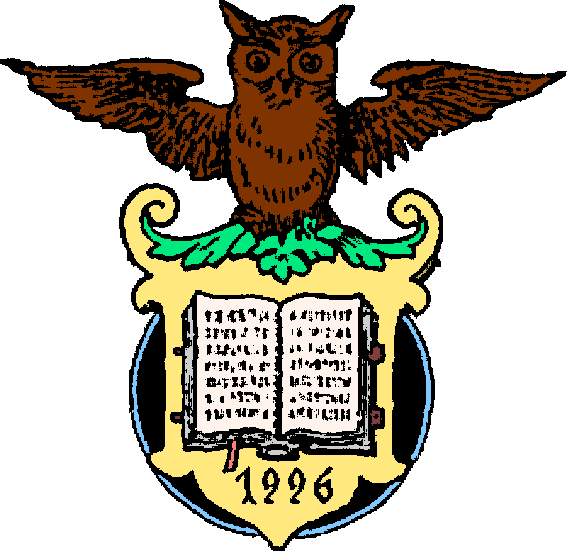

|

Welcome to the home of
information for the largely forgotten mid-1990's cult,
known simply as "The Fellowship of The Dead Owl".
This website was made as a way for people to find out
about the unreported evils that occurred on English
land in November 1996. If you are weak of heart, then
do not enter this Hell-hole, but, if you are willing
to know the truth, then get ready to...
Or
|